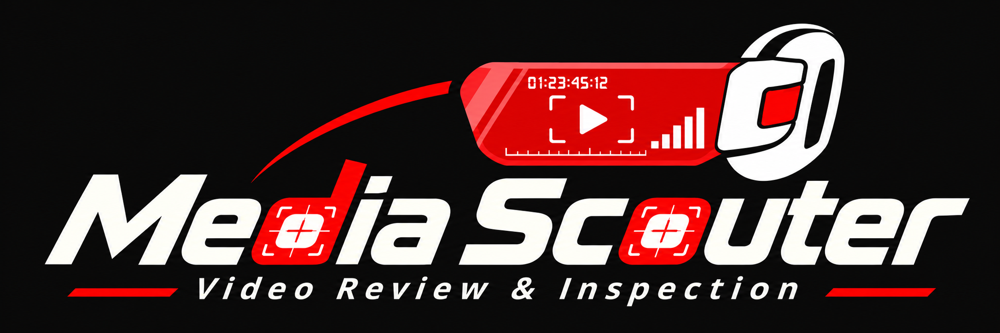
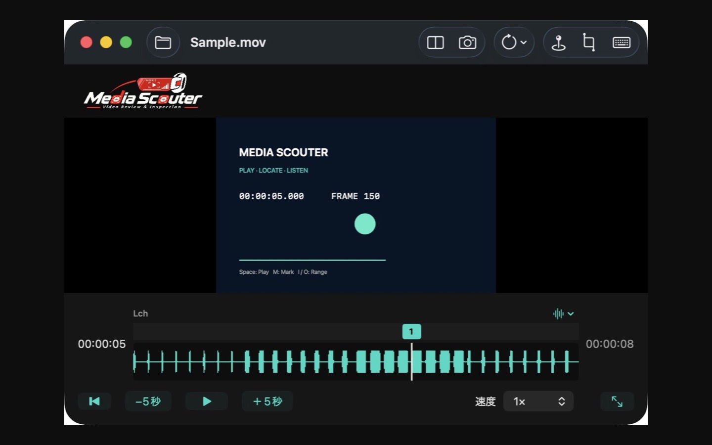
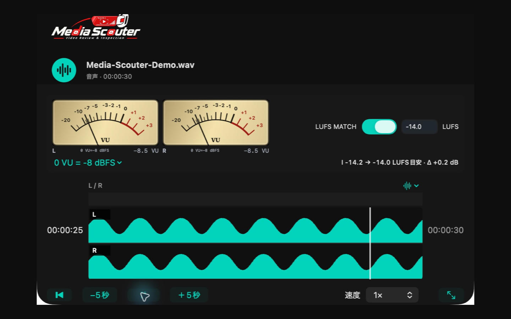
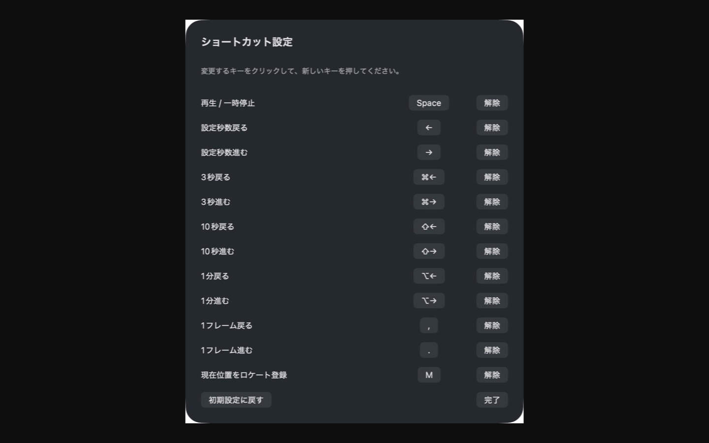

WAVEFORM
波形から、その瞬間へ。
音の変化を目で追いながら、クリックやドラッグで再生位置を移動。波形の強調表示は、再生音を変えずに音の密度を見やすくします。


探す時間を減らして、確認に集中。
THE TOOLKIT
WAVEFORM
音の変化を目で追いながら、クリックやドラッグで再生位置を移動。波形の強調表示は、再生音を変えずに音の密度を見やすくします。
MEMORY LOCATIONS
Mキーで現在位置にロケートを登録。波形上の番号から戻ったり、独立した一覧で名前や時刻を管理できます。
TWO-ANGLE COMPARISON
共通する音声から時間差を検出して比較再生。左右／上下の配置や聞く音声を選び、秒・フレーム単位で同期位置を調整できます。
VU / LUFS MATCH
音声ファイルではL/RのアナログVUとLUFS MATCHを表示。指定したラウドネスで再生し、原本は変更しません。
SNAPSHOT / IN & OUT
表示中の映像をPNGへ保存。対応する動画ではIN／OUTを決めて、必要な区間をMOVへ書き出せます。
KEYBOARD CONTROL
再生、スキップ、コマ送り、ロケート、IN／OUTのキー操作を変更できます。最近再生した項目からの再開もスムーズです。
02 / AUDIO INSPECTION
音声ファイルを開くと、左右の波形とアナログVUを表示。LUFSの測定後はMATCHが自動でオンになり、目標値を基準に再生できます。
目標値の初期設定は−14 LUFS。0 VUの基準も変更できます。波形・VU・LUFSをひとつの画面で確認できます。
VU／LUFS MATCHは音声ファイル専用です。

GET STARTED
フォルダーボタン、Command＋O、ドラッグ＆ドロップで素材を読み込みます。同梱サンプルでも操作を試せます。
Spaceで再生／一時停止。波形をクリックして位置を選び、スキップやコマ送りで細部を確認します。
気になる場所でMを押してロケートを登録。名前を付けて管理し、番号付きのマークからいつでも戻れます。
04 / SHORTCUTS
ツールバーのキーボードボタンからショートカットを設定。自分の確認手順に合わせて、変更・解除・初期化できます。
表示は初期設定です。文字入力中は再生キーを奪いません。

ON YOUR MAC
再生・波形解析・同期解析はMac上で行います。アカウント登録、広告、トラッキングはありません。素材を開発者のサーバーへアップロードすることはありません。
データの取り扱いを見る →FILES & COMPATIBILITY
MOV、MP4、MXFなどの動画と、WAV、MP3、M4A、FLACなどの音声に対応。MXFは全編の変換を待たず、必要な位置を読み取って再生します。
対応は内部コーデックや構成に依存します。一部の形式では互換プレビューを作成します。MXFの表示用映像は最大720pです。
BEFORE YOU START
SUPPORT
ファイルの読み込み、映像や音声の再生、データの扱い。サポートページから確認できます。
サポートを見る →